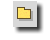
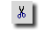
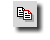

![[ Új ]](pic/new_button.gif) |
Új: Új dokumentumot tudsz létrehozni. A szerkesztõablakban egy üres, "névtelen" fájlt hoz létre.
|
|  |
Megnyitás: Már létezõ, szerkeszteni kívánt fájlt tudsz vele megnyitni.
|
![[ Mentés ]](pic/save_button.gif) |
Mentés: Szerkesztett dokumentum mentése
|
![[ Összes fájl mentése ]](pic/saveall_button.gif) |
Összes fájl mentése: Valamennyi nyitva lévõ dokumentumodat mentheted. Amennyiben a nyitva lévõ fájlok még névtelenek,
úgy minden egyes fájlnál felajánlja neked a Globe az elnevezés lehetõségét.
|
|
Bezárás: Az aktuálisan szerkesztett dokumentumodat zárhatod be vele. Amennyiben több fájlod van egyszerre, úgy a
szerkesztõablak alján látható listában éppen vastag betûkkel szedett fájl név az aktuális fájl.
|
|
Kilépés: A programból való kilépésre szolgál
Ha a bezárni kívánt fájlon módosításokat eszközöltél és még nem mentetted el a változásokat, akkor a Globe figyelmeztet erre.
|
|  |
Kivágás: Az általad kijelölt szöveg, vagy kódrészletet vágja ki a szerkesztett anyagból. Az így kivágott
anyag a vágólapra kerül és onnan vissza is tudod tenni a beillesztés utasítással, illetve az annak megfelelõ billentyûzet paranccsal.
|
|  |
Másolás: A kijelölt szöveget a vágólapra helyezi az utasítás, úgy, hogy a kijelölt szöveg, vagy kódrészlet az
eredeti helyén marad. A másolt szövegrész bármely szerkesztett dokumentumba beilleszthetõ. A Kivágás és Másolás utasítások esetén fontos tudni, hogy a kivágott, vagy másolt anyagot a következõ
ugyanilyen utasítás felülírja.
|
![[ Beillesztés ]](pic/paste_button.gif) |
Beillesztés: A vágólap tartalmát helyezi el az aktuális kurzorpozíciótól kezdõdõen.
|
![[ Visszavonás ]](pic/undo_button.gif) |
Visszavonás: Tulajdonképpen az "Undo" utasítás, másodszori megnyomása a "visszavonás visszavonását"
eredményezi.
|
![[ NetPlus ]](pic/netplus_button.gif) |
NetPositive nézet: A szerkesztett vagy szerkesztés alatt álló dokumentumot tudod segítségével a NetPositive
bõngészõben megnyitni. Mielõtt az ikonra klikkelnél, mentsd el a szerkesztett fájlt!
|
![[ Globe Webeditor ]](pic/menu_top.jpg)
![[ Segédlet ]](pic/menu_hu_02.jpg)
![[ Letöltés ]](pic/menu_hu_04.jpg)
![[ Képek ]](pic/menu_hu_05.jpg)
![[ Fórum ]](pic/menu_hu_06.jpg)
![[ Bottom ]](pic/menu_bottom.jpg)
![[ Globe Webeditor Ismertetõ ]](pic/top_hu_01.jpg)